#003 リッチメニューの作成
ブログ記事「#002 リッチメニューは必須！」はご覧いただきましたか？LINE公式アカウントを運用するのに、リッチメニュー作成は避けては通れない道です。それでは、実際にリッチメニューを作っていきましょう！PCブラウザ版の「LINE Official Account Manager」にログインします。
１．ログイン
「LINE公式アカウント管理画面」の「管理画面にログイン」をクリックし、表示された「LINE公式アカウントでログイン」からログインしましょう。

「LINE公式アカウント管理画面」の「管理画面にログイン」をクリックし、表示された「LINE公式アカウントでログイン」からログインします。
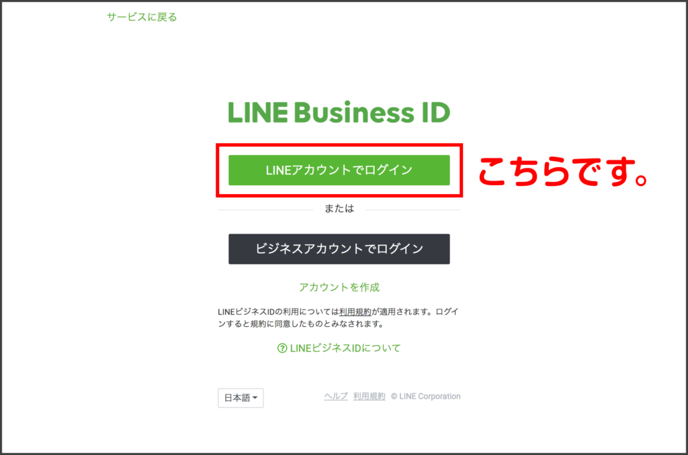
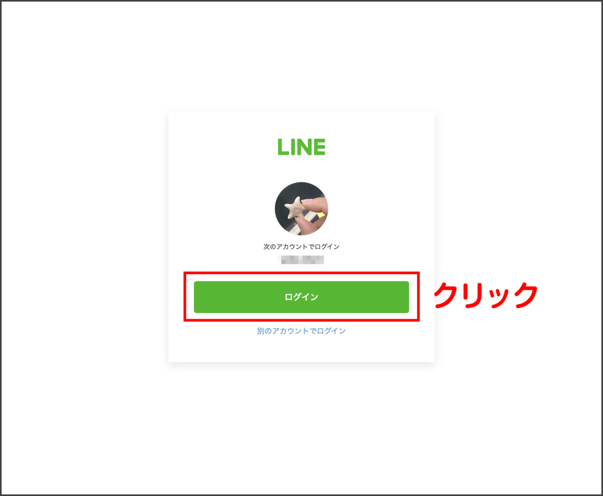
２．アカウントリスト
アカウントリストが表示されます。自分のアカウント名をクリックすると、あなたの公式アカウントの管理画面が表示されます。
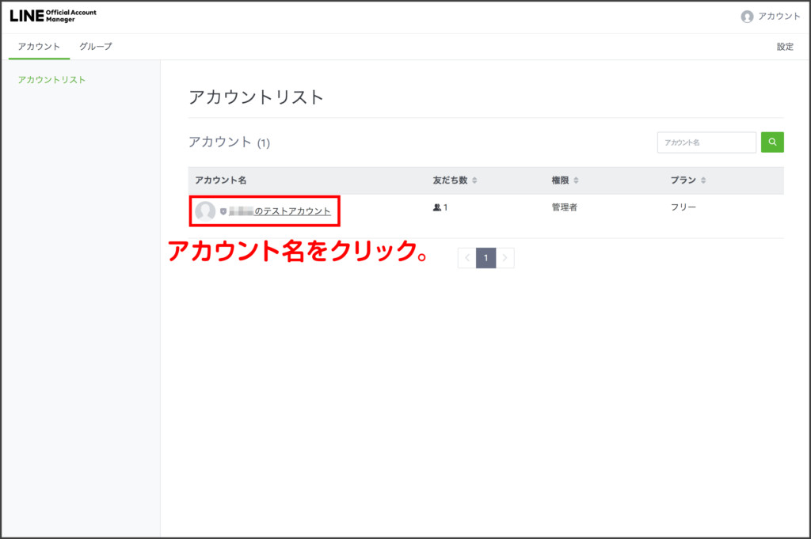
3．いよいよ、リッチメニュー作成スタート！
左のサイドバーにある「リッチメニュー」をクリックし、これから作るリッチメニューのタイトルや表示期間を入力します。
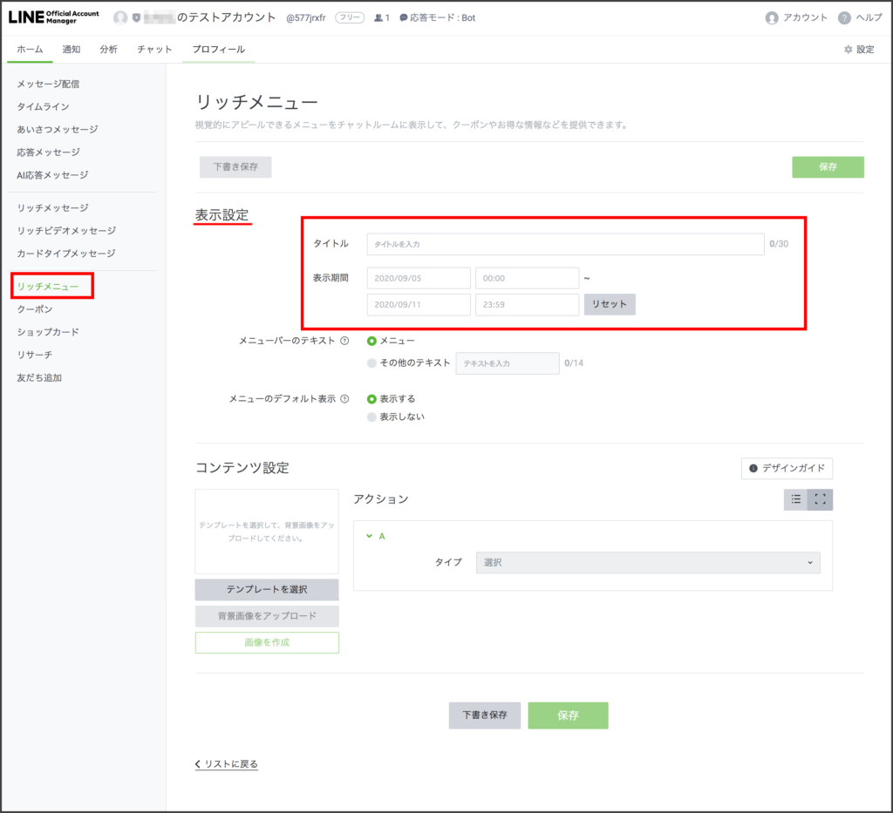
4. コンテンツ作成
リッチメニューのコンテンツ（クーポンやセミナー、HPへのリンク等に誘導するボタン）を作成します！登録してくれた友だちに興味を持ってもらい、自分のサービスやビジネスに誘導するための一番重要な部分です。
画面を下にスクロールし、「コンテンツ設定」からまずは「テンプレートを選択」します。テンプレートは12種類ありますが、ここでは６ボタンを選択します。
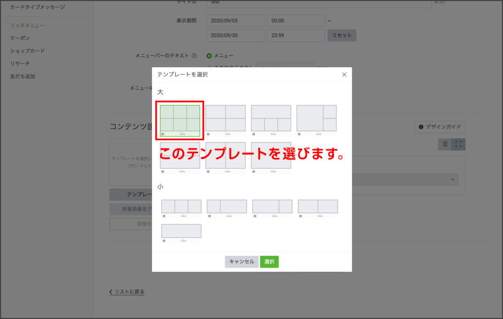
５．背景画像（デザイナーに制作してもらう）をアップする
リッチメニュー用に6分割されたデザインの背景画像を用意しておき、「背景画像をアップロード」から、アップロードします。
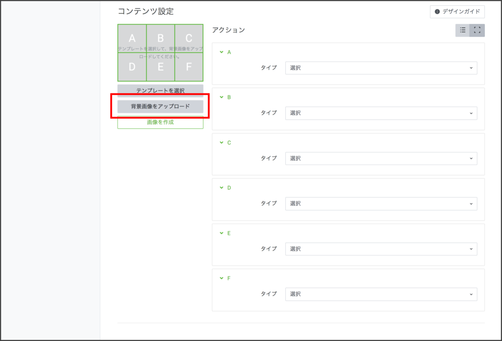
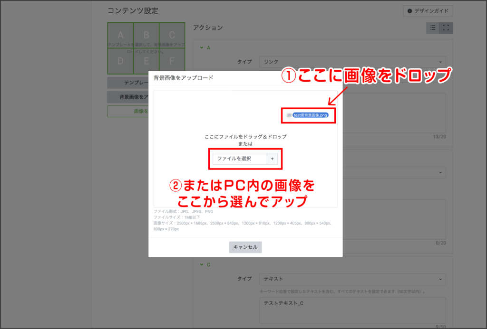
背景画像を自分で作れない方は、プロのデザイナーに依頼してきちんとしたイメージを制作してもらうのがオススメです！注意事項としては、1マスずつの画像を作るのではなく、ボタン６個分を1枚の画像として作成してもらうという点です。
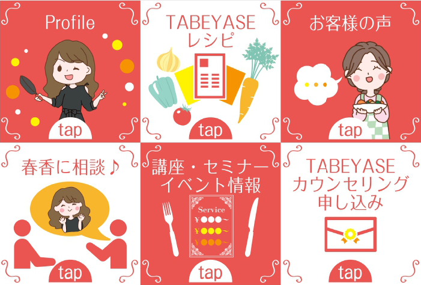
下のテンプレート（大）サイズを、デザイナーに伝えてください。凝ったデザインの背景画像を作りたい場合は2,500px×1,686pxで作ってもらいましょう。シンプルなデザインで良いなら800px×540pxで大丈夫です！大きなサイズの画像より友だちのスマホ上での読み込みが速いというメリットがあります。
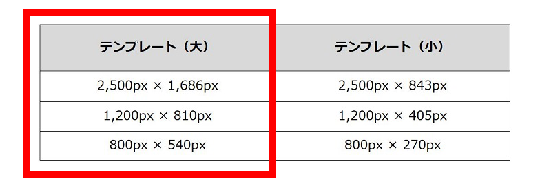
ご自分で作成したい、という方には、また別記事でやり方を説明しますね。
６．ボタンを設定する
６分割それぞれのエリアに応じて、URLやクーポン、メルマガ登録やセミナースケジュールの告知など、ひとつひとつプルダウンメニューからコンテンツを設定していきます。それが済んだら、ひとまずリッチメニューは完成です！
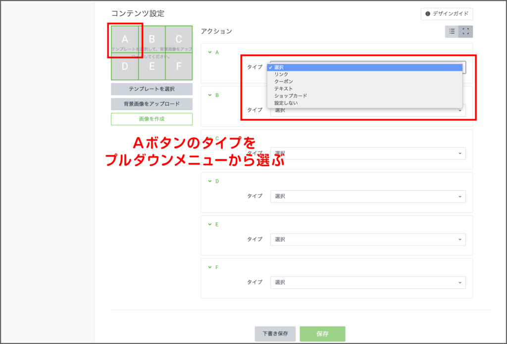
プルダウンメニューの内容は、大まかに説明すると下記の通りです：
| ●リンク | 貼付けたURLにリンク |
| ●クーポン | 作成済みのクーポンから選択 |
| ●テキスト | 入力したメッセージを表示 |
| ●ショップカード | 作成済みのショップカード選択 |
| ●設定しない | なにも起きない |
また、プルダウンメニューを選ぶと、下のように「アクションラベル」の欄が表示されます。自分用のメモ程度に、わかりやすいタイトルを付けて入力しておきましょう（入力必須／1〜20文字以内）。
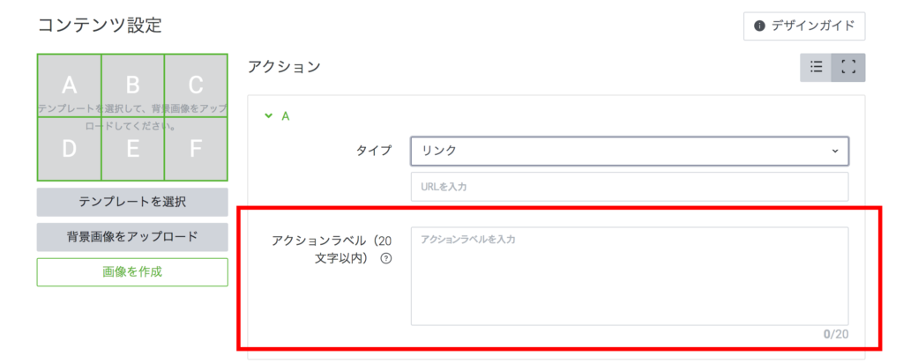
わかりにくければ、matsumotoをLINEの友だち追加していただいてお気軽にご相談くださいね！
まずはLINE公式アカウントを開設しましょう！
●LINE公式アカウントの開設方法はこちら
●LINE公式アカウントをオススメする理由はこちら
●LINE公式アカウントでできることはこちら
●Lステップでできることはこちら